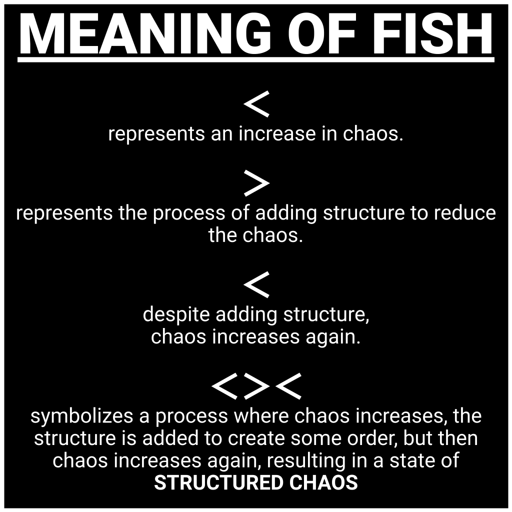
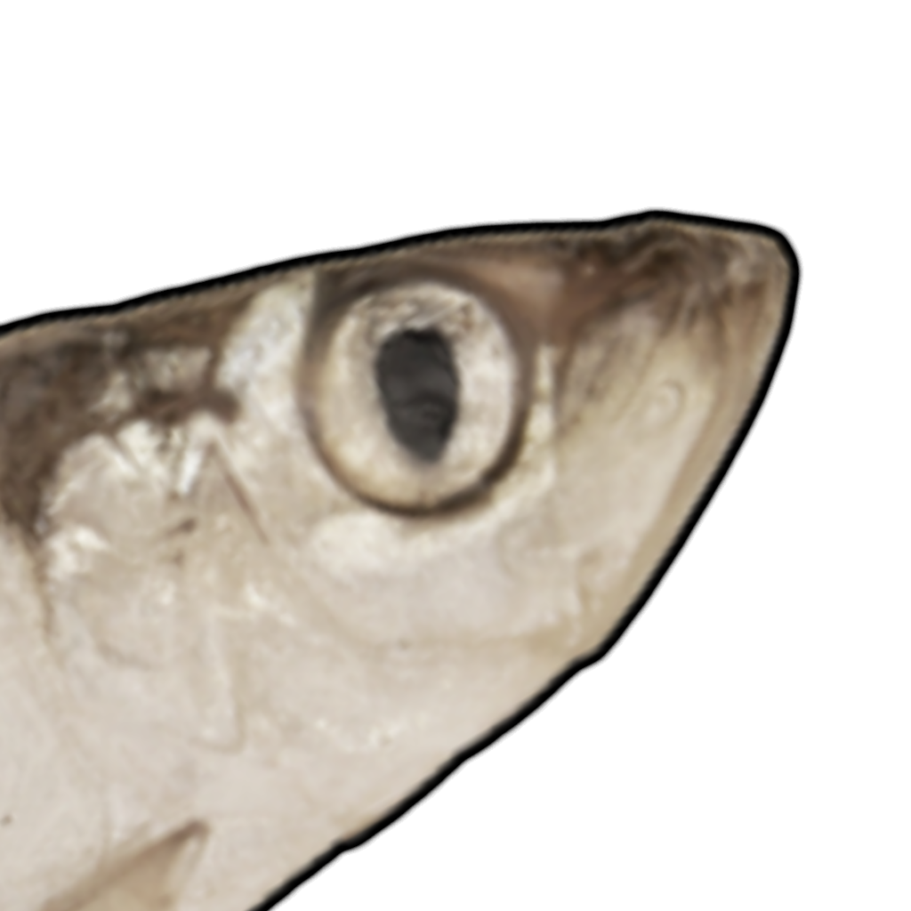

These four words are a starting point for building your own ecosystem.
Look at each word on its own: Structure, Chaos, Community, Ecosystem. Decide what each means to you, then build from your definitions.
Don't want to build an ecosystem?
Just focus on Structured Chaos Community. Build a single community, or join one that already exists.
View All Communities →Don't want to build or join a community?
Just focus on Structured Chaos. Find a balance between structure and chaos that makes your life better.
Feel free to use everything on this website. No permission needed. Create your own community or ecosystem, with or without the fish symbolism. Good luck and have fun :D
please make more cool communities on the internet, modern internet kinda sucks :(

First Structured Chaos Community Ecosystem
It is both a community and an ecosystem it's made out of multiple communities, each with its own leadership and rules. All communities work together and follow the same principles.

Feel free to get inspired by the FISH ＜＞＜ COMMUNITY. But don't treat it as the only way of doing things. You can structure things differently.
Human nature is complex. People are different, and not everyone will understand your principles or rules just because they are told to. Good and evil exist, and everyone comes from different cultures with different perspectives. Some people don't speak English or know how to communicate, and some people don't have the mental capacity or knowledge to understand complicated things.
It's important to remember that things will never be perfect if humans are involved, so it's important to keep a balance between everything.